Название |
Описание |
|
Полезный объем м³ |
Вмести-мость евро-паллета |
Пример |
| Полуприцеп Тент |
Один из наиболее распространенных типов грузовых автомобилей. Предназначен для перевозки большинства видов грузов. Загрузка может производиться сверху, сбоку, сзади. |
20-25 |
60-96 |
22-33 |
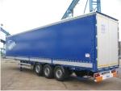 |
| Рефрижератор, полуприцеп |
Полуприцеп с холодильной установкой. Предназначен для перевозки скоропортящихся грузов, а также требующих определенного температурного режима. В грузовом отсеке он сохраняет температуру от +25° до - 25°С. Эксплуатация дороже обычных типов машин на 5-25%. |
20 |
82 |
32 |
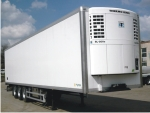 |
| Изотерм |
Предназначен для перевозки продуктов питания на небольшие расстояния. Способен сохранять температуру склада достаточное, для сохранения качества продукции, время. |
3-25 |
32-92 |
6-33 |
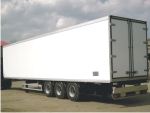 |
| Автосцепка |
Автомобиль плюс прицеп. Преимущество: быстрая погрузка и разгрузка, а также большой полезный объем. Недостаток: не пригоден для перевозки длинномерных изделий. |
16-25 |
60-120 |
22-33 |
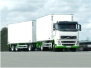 |
| "Jumbo" |
Полуприцеп повышенной вместимости, которая достигается за счет "Г"-образного пола и уменьшенного диаметра колес полуприцепа. |
20 |
96-110 |
33 |
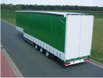 |
| Контейнеровоз |
Пригоден для перевозки контейнеров различных видов. |
20-30 |
|
|
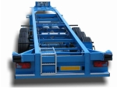 |
| Открытая бортовая |
Дает возможность перевозить разногабаритные грузы, которые выдерживают воздействия различных погодных условий. |
3-25 |
|
|
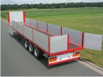 |
| Открытая платформа |
Дает возможность перевозить разногабаритные грузы, которые выдерживают воздействия различных погодных условий. |
15-20 |
|
|
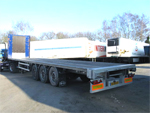 |
| Автоцистерна |
Предназначена для перевозки жидкостей. |
12-22 |
8-40 |
|
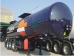 |
| Микроавтобус |
Предназначен для перевозки грузов малого объема и веса. |
1-3 |
3-10 |
|
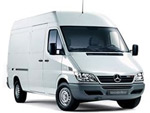 |
| Автовоз |
Предназначен для перевозки легковых автомобилей. Вместимость напрямую зависит от длины прицепа (в среднем 8-10 автомобилей). |
20-25 |
|
|
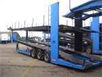 |
| Зерновоз |
Применяется для перевозки зерновых культур. |
12-22 |
|
|
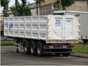 |
| Самосвал |
Применяется для перевозки песка и других сыпучих грузов. |
12-22 |
|
|
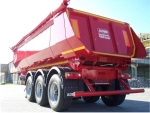 |
| Лесовоз |
Дает возможность перевозки длинномерной лесо-трубной продукции. |
10-30 |
|
|
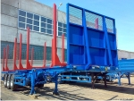 |